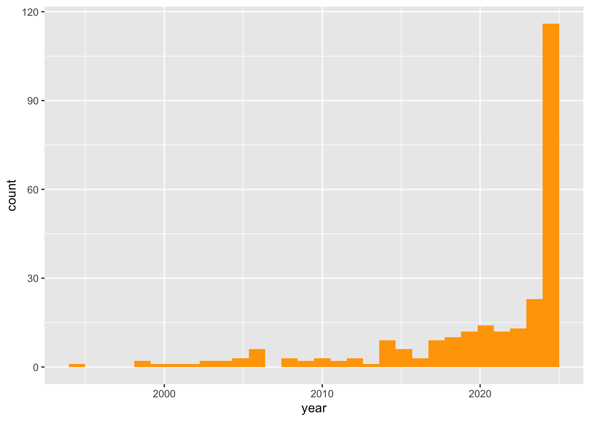

## List pacakges used in the script
packages <- c("rscopus", "RefManageR", "tidyverse","brio",
"stringr", "bibtex", "glue", "here", "litsearchr",
"revtools", "remotes", "igraph", "remotes",
"PRISMAstatement")
## Load packages and install them if needed
for (package in packages) {
if (!require(package, character.only = TRUE)) {
if (package == "litsearchr") remotes::install_github("elizagrames/litsearchr", ref="main")
else install.packages(package)
}
}Companion code for section 2: Search strategy & selection of references
Let us first install and load the packages we will need.
We also need to organize our repository
dir.create("raw-data") #for raw data
dir.create("processed-data") #for the unique references
dir.create("output")1 Retrieving references from Scopus
Set your API key - if you do not have one, please go to the Elsevier Developer Portal to apply for one with your institutional credentials.
Once you have your key (i.e. a long string of digits and characters), replace Your_scopus_api_key by the key value, and add quotes, for instance: options(elsevier_api_key = “my8personal4key”)
options(elsevier_api_key = Your_scopus_api_key)Set your research query:
query <- "( ( ( TITLE ( govern* OR state OR decision-making OR policy-making OR stakeholder OR participat* ) ) AND ( TITLE-ABS-KEY ( impact OR outcome OR result OR differentiation OR consequence OR change OR transformation OR role ) ) ) OR ( TITLE-ABS-KEY ( governance W/0 ( mode OR model OR process ) ) ) ) AND
( TITLE-ABS-KEY ( effect OR caus* OR explain* OR influence OR affect OR mechanism OR restrict OR create OR impact OR drive OR role OR transform* OR relation* OR led OR improve OR interven* OR respon* ) ) AND
( TITLE-ABS-KEY ( effect OR caus* OR explain* OR influence OR affect OR mechanism OR restrict OR create OR impact OR drive OR role OR transform* OR relation* OR led OR improve OR interven* OR respon* ) ) AND
( TITLE-ABS-KEY ( urban OR neighborhood OR city OR residential OR regional OR housing ) W/0 ( development OR redevelopment OR regeneration OR restructuring OR revitalization OR construction OR governance ) ) AND
( LIMIT-TO ( DOCTYPE , \"ar\" ) ) AND
( LIMIT-TO ( LANGUAGE , \"English\" ) )"Query scopus if you get the api key. Note that you can modify the max_count for each searching:
if (have_api_key()) {
res <- scopus_search(query = query, max_count = 200, count = 10, view = "COMPLETE")
search_results <- gen_entries_to_df(res$entries)
}The query list is: list(query = "( ( ( TITLE ( govern* OR state OR decision-making OR policy-making OR stakeholder OR participat* ) ) AND ( TITLE-ABS-KEY ( impact OR outcome OR result OR differentiation OR consequence OR change OR transformation OR role ) ) ) OR ( TITLE-ABS-KEY ( governance W/0 ( mode OR model OR process ) ) ) ) AND \n ( TITLE-ABS-KEY ( effect OR caus* OR explain* OR influence OR affect OR mechanism OR restrict OR create OR impact OR drive OR role OR transform* OR relation* OR led OR improve OR interven* OR respon* ) ) AND \n ( TITLE-ABS-KEY ( effect OR caus* OR explain* OR influence OR affect OR mechanism OR restrict OR create OR impact OR drive OR role OR transform* OR relation* OR led OR improve OR interven* OR respon* ) ) AND \n ( TITLE-ABS-KEY ( urban OR neighborhood OR city OR residential OR regional OR housing ) W/0 ( development OR redevelopment OR regeneration OR restructuring OR revitalization OR construction OR governance ) ) AND \n ( LIMIT-TO ( DOCTYPE , \"ar\" ) ) AND \n ( LIMIT-TO ( LANGUAGE , \"English\" ) )",
count = 10, start = 0, view = "COMPLETE")
$query
[1] "( ( ( TITLE ( govern* OR state OR decision-making OR policy-making OR stakeholder OR participat* ) ) AND ( TITLE-ABS-KEY ( impact OR outcome OR result OR differentiation OR consequence OR change OR transformation OR role ) ) ) OR ( TITLE-ABS-KEY ( governance W/0 ( mode OR model OR process ) ) ) ) AND \n ( TITLE-ABS-KEY ( effect OR caus* OR explain* OR influence OR affect OR mechanism OR restrict OR create OR impact OR drive OR role OR transform* OR relation* OR led OR improve OR interven* OR respon* ) ) AND \n ( TITLE-ABS-KEY ( effect OR caus* OR explain* OR influence OR affect OR mechanism OR restrict OR create OR impact OR drive OR role OR transform* OR relation* OR led OR improve OR interven* OR respon* ) ) AND \n ( TITLE-ABS-KEY ( urban OR neighborhood OR city OR residential OR regional OR housing ) W/0 ( development OR redevelopment OR regeneration OR restructuring OR revitalization OR construction OR governance ) ) AND \n ( LIMIT-TO ( DOCTYPE , \"ar\" ) ) AND \n ( LIMIT-TO ( LANGUAGE , \"English\" ) )"
$count
[1] 10
$start
[1] 0
$view
[1] "COMPLETE"
Response [https://api.elsevier.com/content/search/scopus?query=%28%20%28%20%28%20TITLE%20%28%20govern%2A%20OR%20state%20OR%20decision-making%20OR%20policy-making%20OR%20stakeholder%20OR%20participat%2A%20%29%20%29%20AND%20%28%20TITLE-ABS-KEY%20%28%20impact%20OR%20outcome%20OR%20result%20OR%20differentiation%20OR%20consequence%20OR%20change%20OR%20transformation%20OR%20role%20%29%20%29%20%29%20OR%20%28%20TITLE-ABS-KEY%20%28%20governance%20W%2F0%20%28%20mode%20OR%20model%20OR%20process%20%29%20%29%20%29%20%29%20AND%20%0A%20%20%20%20%20%20%20%20%20%20%28%20TITLE-ABS-KEY%20%28%20effect%20OR%20caus%2A%20OR%20explain%2A%20OR%20influence%20OR%20affect%20OR%20mechanism%20OR%20restrict%20OR%20create%20OR%20impact%20OR%20drive%20OR%20role%20OR%20transform%2A%20OR%20relation%2A%20OR%20led%20OR%20improve%20OR%20interven%2A%20OR%20respon%2A%20%29%20%29%20AND%20%0A%20%20%20%20%20%20%20%20%20%20%28%20TITLE-ABS-KEY%20%28%20effect%20OR%20caus%2A%20OR%20explain%2A%20OR%20influence%20OR%20affect%20OR%20mechanism%20OR%20restrict%20OR%20create%20OR%20impact%20OR%20drive%20OR%20role%20OR%20transform%2A%20OR%20relation%2A%20OR%20led%20OR%20improve%20OR%20interven%2A%20OR%20respon%2A%20%29%20%29%20AND%20%0A%20%20%20%20%20%20%20%20%20%20%28%20TITLE-ABS-KEY%20%28%20urban%20OR%20neighborhood%20OR%20city%20OR%20residential%20OR%20regional%20OR%20housing%20%29%20W%2F0%20%28%20development%20OR%20redevelopment%20OR%20regeneration%20OR%20restructuring%20OR%20revitalization%20OR%20construction%20OR%20governance%20%29%20%29%20AND%20%0A%20%20%20%20%20%20%20%20%20%20%28%20LIMIT-TO%20%28%20DOCTYPE%20%2C%20%22ar%22%20%29%20%29%20AND%20%0A%20%20%20%20%20%20%20%20%20%20%28%20LIMIT-TO%20%28%20LANGUAGE%20%2C%20%22English%22%20%29%20%29&count=10&start=0&view=COMPLETE]
Date: 2024-04-26 08:16
Status: 200
Content-Type: application/json;charset=UTF-8
Size: 57 kBTotal Entries are 4941Maximum Count is 20020 runs need to be sent with current count
|
| | 0%
|
|==== | 6%
|
|======== | 11%
|
|============ | 17%
|
|================ | 22%
|
|=================== | 28%
|
|======================= | 33%
|
|=========================== | 39%
|
|=============================== | 44%
|
|=================================== | 50%
|
|======================================= | 56%
|
|=========================================== | 61%
|
|=============================================== | 67%
|
|=================================================== | 72%
|
|====================================================== | 78%
|
|========================================================== | 83%
|
|============================================================== | 89%
|
|================================================================== | 94%
|
|======================================================================| 100%Number of Output Entries are 200Create an empty list to store search results
ids <- search_results$df$pii
search_results_list <- list()
for (id in ids) {
search_results_list[[id]] <- search_results$df
}Convert the list to a data frame
results_df <- do.call(rbind, search_results$df)
transposed_results_df <- t(results_df)What does it look like?
head(transposed_results_df) @_fa prism:url
[1,] "true" "https://api.elsevier.com/content/abstract/scopus_id/85189521736"
[2,] "true" "https://api.elsevier.com/content/abstract/scopus_id/85187130405"
[3,] "true" "https://api.elsevier.com/content/abstract/scopus_id/85181753540"
[4,] "true" "https://api.elsevier.com/content/abstract/scopus_id/85190321293"
[5,] "true" "https://api.elsevier.com/content/abstract/scopus_id/85189945016"
[6,] "true" "https://api.elsevier.com/content/abstract/scopus_id/85189526618"
dc:identifier eid
[1,] "SCOPUS_ID:85189521736" "2-s2.0-85189521736"
[2,] "SCOPUS_ID:85187130405" "2-s2.0-85187130405"
[3,] "SCOPUS_ID:85181753540" "2-s2.0-85181753540"
[4,] "SCOPUS_ID:85190321293" "2-s2.0-85190321293"
[5,] "SCOPUS_ID:85189945016" "2-s2.0-85189945016"
[6,] "SCOPUS_ID:85189526618" "2-s2.0-85189526618"
dc:title
[1,] "Explaining Factors Affecting Flood Evacuation From the Point of View of Stakeholders: AContent Analysis Study"
[2,] "An Integrated Multi-Source Dataset for Measuring Settlement Evolution in the United States from 1810 to 2020"
[3,] "De-bordering policies at the city scale: strategies for building resilience in Barcelona's migration governance"
[4,] "Advancing equitable ‘resilience imaginaries’ in the Global South through dialogical participatory mapping: Experiences from informal communities in Brazil"
[5,] "Reconceiving China's urban economic transition through symbiotic state-firm dynamics: An integrated perspective from urban governance and global production networks"
[6,] "Empowering urban energy transition through data-driven decision-making: A statistical examination of technological innovations in transportation and mobility"
dc:creator prism:publicationName
[1,] "Karampourian A." "Health in Emergencies and Disasters Quarterly"
[2,] "Ahn Y." "Scientific Data"
[3,] "Zapata-Barrero R." "Comparative Migration Studies"
[4,] "Pitidis V." "Cities"
[5,] "Wang K." "Cities"
[6,] "Zhang F." "Sustainable Cities and Society"
prism:eIssn prism:volume prism:issueIdentifier prism:pageRange
[1,] "23454210" "9" "2" "115-124"
[2,] "20524463" "11" "1" NA
[3,] "2214594X" "12" "1" NA
[4,] NA "150" NA NA
[5,] NA "150" NA NA
[6,] NA "106" NA NA
prism:coverDate prism:coverDisplayDate prism:doi
[1,] "2024-12-01" "Winter 2024" "10.32598/hdq.9.2.494.4"
[2,] "2024-12-01" "December 2024" "10.1038/s41597-024-03081-x"
[3,] "2024-12-01" "December 2024" "10.1186/s40878-023-00361-0"
[4,] "2024-07-01" "July 2024" "10.1016/j.cities.2024.105015"
[5,] "2024-07-01" "July 2024" "10.1016/j.cities.2024.104974"
[6,] "2024-07-01" "1 July 2024" "10.1016/j.scs.2024.105374"
dc:description
[1,] "Background: Floods are a natural hydrological hazard that causes human and environmental damage. In the response phase, evacuation is necessary to reduce deterioration. This study explains the influential factors on flood evacuation based on the opinion of the stakeholders. Materials and Methods: This is a conventional content analysis study conducted in 2021. A total of 27 participants were selected using the purposive sampling method. Data collection was performed using semi-structured interviews. Interviews continued until information saturation was reached. The recorded interviews were handwritten word by word and then analyzed. The criteria for entering the study included flood experience, the ability to communicate, and willingness to participate. The period of the interview was 40 to 70 min. Written consent was obtained from the interviewees for audio recording. The Granheim and Lundman method was used for data analysis. This study’s reliability was based on the Goba and Lincoln method. Results: Data analysis extracted four main categories with ten sub-categories, including human factors (a subcategory of individual characteristics and risk perception), social factors (a subcategory of cultural conditions and financial status), geographical factors (a sub-category of urban location and climate conditions), and infrastructure factors (a sub-category of facilities related to transportation tools and routes, urban constructions, communication infrastructure, and meteorological facilities). Conclusion: Reaching a successful evacuation requires determining the relevant factors. These factors include human, social, geographic, and infrastructure factors. The findings of this study can help managers in flood management."
[2,] "Understanding changes in the built environment is vital for sustainable urban development and disaster preparedness. Recent years have seen the emergence of a variety of global, continent-level, and nation-wide datasets related to the current state and the evolution of the built environment, human settlements or building stocks. However, such datasets may face limitations like incomplete coverage, sparse building information, coarse resolution, and limited timeframes. This study addresses these challenges by integrating three spatial datasets to create an extensive, attribute-rich sequence of settlement layers spanning 200 years for the contiguous U.S. This integration process involves complex data processing, merging property-level real estate, parcel, and remote sensing-based building footprint data, and creating gridded multi-temporal settlement layers. This effort unveils the latest edition (Version 2) of the Historical Settlement Data Compilation for the U.S. (HISDAC-US), which includes the latest land use and structural information as of the year 2021. It enables detailed research on urban form and structure, helps assess and map the built environment’s risk to natural hazards, assists in population modeling, supports land use analysis, and aids health studies."
[3,] "This article bridges the fields of urban politics, migration governance and border studies by exploring Barcelona as a case study. It raises a first critical question about what happens to so-called borderlands when \"borders\" move to other scales, such as cities that are not usually categorized as \"border cities\". Within this framing debate, this study explores two fundamental questions: (1) how border practices at the state level shape constrained relations between cities and migrants, and (2) how cities map de-bordering policies to resolve such constraints, which we conceptualise as an example of 'urban resilience'. The aim is to provide a focus that brings the analytical category of \"urban resilience\", recently proposed within the emerging debate on the \"local turn\" in migration studies, to bear on issues directly related to the social impacts of state bordering processes on urban systems. The article then argues that urban justice principles drive most cities to initiate resilient de-bordering policies, and can be seen as a distinctive normative factor underpinning urban resilience when applied to migration governance. After laying the groundwork for this theoretical framework and its application to the city of Barcelona, the final section briefly outlines the potential of this new and crucial critical area of migration research. This will provide yet another opportunity to highlight that we are likely to enter an era in which cities will increasingly become sovereign geopolitical entities within and beyond the traditional hierarchical reach of their own states."
[4,] "Over recent years, and as a result of the recent global health pandemic, resilience has become increasingly central to contemporary policy discourses in urban planning and development in both the Global North and Global South. Drawing from ongoing empirical studies of community resilience and everyday practices that have been co-designed and co-produced alongside Brazilian marginalised communities which are highly vulnerable to a range of natural hazards, this paper highlights the growing importance of dialogical stakeholder engagement methodologies in designing alternative urban visions – so-called resilience imaginaries or counter-cities - across the Global South based on social diversity, equity and spatial justice. More specifically, the dialogical participatory mapping approach outlined in this paper utilises citizen science approaches to develop local resilience imaginaries, building on the pedagogical work of Brazilian educator Paulo Freire and the conceptualisation of dialogue as a comprehensive and progressively unfolding methodological approach. Practically, we adopted a range of community engagement approaches that allowed local citizens to become more aware of their own risk context and embed this tacit knowledge into the operation of civil protection programmes. Our empirical results highlight the potential of such dialogical participatory approaches to capture lay knowledge from local citizens and contribute to the development of enhanced resilience approaches. The paper concludes by reflecting on the role of formerly marginalised voices in the advancement of local urban policy and on the novelty and promise of critical pedagogical approaches to co-production within existing regimes of urban governance and the imagining of radically independent counter-cities."
[5,] "China's urban economic transition since the 2000s has garnered considerable scholarly interest. Two distinct bodies of scholarship, namely urban governance and global production networks, have investigated this phenomenon, each offering unique insights either from an endogenous state-centric or exogenous firm-centric approach. The former has justifiably accentuated the centrality of the state in shaping Chinas urban-regional economic reconfiguration but lacks exploration of the multifaceted ways in which state apparatus engages with a spectrum of quotidian firm-level activities and the negotiation power these firms wield. The latter embraces an exogenous firm-centric perspective on the economic transition in East Asia latecomer regions, stressing forces of globalisation, foreign investment, and intra/inter/extra-firm networks, but tends to bracket the state into the institutional background and, therefore, downplays its agentic role. By initiating a dialogue between these two theoretical frameworks, this paper formulates a dialectical state-firm relational approach, offering a revitalised, integrative comprehension of China's urban economic transformation. Employing Dongguan - a globally recognised hub for ICT manufacturing - as an empirical focal point, it elucidates how the relational state-firm dynamics evolve temporally, differ spatially across territories and scales, and display distinct contrasts between high-value-added and labour-intensive sectors within the ICT industry."
[6,] "Urban energy consumption is a critical aspect of sustainable urban development, with technological innovations playing a pivotal role in shaping energy usage patterns. This paper presents a comprehensive analysis of urban energy consumption dynamics in relation to the adoption of technology across various sectors, including transportation, residential, industrial, and commercial domains. Through extensive data collection and advanced statistical analyses, we investigate the correlation between technology adoption rates and energy consumption behaviors in urban areas. Our findings reveal a strong positive correlation between technology adoption rates and reduced energy consumption across sectors. We employ spatial analyses to identify localized successes, shedding light on regions where technology-driven initiatives have significantly lowered energy demands. These insights offer valuable guidance for urban planners and policymakers aiming to implement targeted interventions and replicate effective strategies. Furthermore, the paper emphasizes the transformative potential of innovative solutions, ranging from smart infrastructure to industrial automation, in promoting energy efficiency and environmental sustainability. By fostering the integration of such technologies, cities can mitigate their carbon footprint, enhance energy resilience, and create more livable environments for residents. This research contributes to the discourse on urban energy transitions and provides actionable insights for urban policymakers and stakeholders striving for a greener, more sustainable urban future."
citedby-count prism:aggregationType subtype subtypeDescription
[1,] "0" "Journal" "ar" "Article"
[2,] "0" "Journal" "dp" "Data Paper"
[3,] "0" "Journal" "ar" "Article"
[4,] "0" "Journal" "ar" "Article"
[5,] "0" "Journal" "ar" "Article"
[6,] "0" "Journal" "ar" "Article"
author-count.@limit author-count.@total author-count.$
[1,] "100" "3" "3"
[2,] "100" "4" "4"
[3,] "100" "1" "1"
[4,] "100" "3" "3"
[5,] "100" "4" "4"
[6,] "100" "8" "8"
authkeywords
[1,] "Disaster planning | Disasters | Emergency shelter | Floods"
[2,] NA
[3,] "Barcelona | Bordering politics | De-bordering policies | Migration | Urban governance urban resilience | Urban justice"
[4,] "Co-production | Counter-cities | Dialogical methods | Participatory mapping | Resilience imaginaries"
[5,] "China | Global production networks | State-firm relations | Urban economic transition | Urban governance"
[6,] "Energy efficiency | Spatial analysis | Sustainable urban development | Technology adoption | Urban energy consumption"
source-id fund-no fund-sponsor
[1,] "21101146384" "undefined" "Hamadan University of Medical Sciences"
[2,] "21100451321" "1924670" "National Science Foundation"
[3,] "21100899442" "101079254" NA
[4,] "16956" "101019707" "Bundesministerium für Bildung und Forschung"
[5,] "16956" "42201268" "National Natural Science Foundation of China"
[6,] "19700194105" "undefined" NA
openaccess openaccessFlag entry_number pubmed-id article-number fund-acr
[1,] "0" "FALSE" "1" NA NA NA
[2,] "1" "TRUE" "2" "38453937" "275" "NSF"
[3,] "1" "TRUE" "3" NA "2" NA
[4,] "0" "FALSE" "4" NA "105015" "BMBF"
[5,] "1" "TRUE" "5" NA "104974" "NSFC"
[6,] "0" "FALSE" "6" NA "105374" NA
freetoread.value.$ freetoreadLabel.value.$ prism:issn pii
[1,] NA NA NA NA
[2,] "all" "All Open Access" NA NA
[3,] "all" "All Open Access" NA NA
[4,] NA NA "02642751" "S0264275124002294"
[5,] "all" "All Open Access" "02642751" "S0264275124001884"
[6,] NA NA "22106707" "S2210670724002026"Write the details to a CSV file
write.csv(transposed_results_df, here("processed-data", "scopus_api_results.csv"), row.names = FALSE)Export a into a .bib file
df <- read.csv(here("processed-data", "scopus_api_results.csv"))
for (i in 1:nrow(df)) {
df$authkeywords[i] <- paste(unlist(strsplit(df$authkeywords[i], "\\s*\\|\\s*")), collapse = ", ")
}
data <- data.frame(
Author = df$dc.creator,
Title = df$dc.title,
Year = sub(".*\\s(\\d{4})$", "\\1", df$prism.coverDisplayDate),
Journal = df$prism.publicationName,
Volume = df$prism.volume,
Number = df$article.number,
Pages = df$prism.pageRange,
DOI = df$prism.doi,
Keyword = df$authkeywords
)Create a list of BibEntry objects
# Format the Keywords field
bib_entries <- lapply(1:nrow(data), function(i) {
BibEntry(
bibtype = "Article", # Add the bibtype argument
key = paste0(substr(data$Author[i], 1, 1), data$Year[i]),
author = data$Author[i], # Add author field
title = data$Title[i], # Add title field
year = data$Year[i], # Add year field
journal = data$Journal[i], # Add journal field
volume = data$Volume[i], # Add volume field
number = data$Number[i], # Add number field
pages = data$Pages[i], # Add pages field
doi = data$DOI[i], # Add DOI field
url = data$Keyword[i] # Add Keyword field (because BibEntry function does not provide keyword indicator, use url for keywords as an example.)
)
})Convert each BibEntry object to BibTeX format individually
bib_texts <- lapply(bib_entries, toBibtex)Combine the BibTeX texts into a single character vector
bib_text <- unlist(bib_texts, use.names = FALSE)Write BibTeX file
writeLines(bib_text, here("processed-data","scopus_references.bib"))2 Combining tables, deduplicating references and summarising the results
Although a dedicated package exist to retrieve references from the Web of Science API (wosr), we have not been able to make it work. Instead, we used the web interface of the [Web of Science](https://www.webofscience.com/wos/woscc/summary/82f1ef9f-d361-4455-a556-cc37014e5f7a-de2281b0/relevance/1] (through our institutional access) to run the same query:
( ( ( TI= ( govern* OR state OR decision-making OR policy-making OR participat* OR stakeholder ) ) AND ( TS= ( impact OR outcome OR performance OR result OR differentiation OR consequence OR change OR transformation OR role ) ) ) OR ( TS= ( governance NEAR/0 ( mode OR model OR role OR process )) ) ) AND (TS= ( effect OR caus* OR explain* OR influence OR affect OR mechanism OR restrict OR create OR impact OR drive OR role OR transform* OR relation* OR led OR improve OR interven* OR respon* ) ) AND ( TS= (( urban OR neighborhood OR city OR residential OR regional OR housing ) NEAR/0 (development OR redevelopment OR renewal OR regeneration OR restructuring OR revitalization OR governance ) ) )
We then selected the articles written in English from the results and obtained 3180 results as of 11 April 2024. We downloaded the first 200 records in .bib format for this example: wos_reference.bib, and saved them in the raw-data folder of our project. Indeed, we want to show that this code can combine bibliographic data from different queries and or different databases.
wos_data <-synthesisr::read_refs(here("raw-data", "wos_reference.bib"))
scopus_data <- synthesisr::read_refs(here("processed-data", "scopus_references.bib"))
# Remember we stored keywords into the url field, let's rename it now:
scopus_data$keywords <- scopus_data$urlSave variable names of dataframes is object
unique_vars_scopus <- colnames(scopus_data)
unique_vars_wos <- colnames(wos_data)Identify which columns the scopus and wos dataframes have in common
common_vars <- intersect(unique_vars_scopus, unique_vars_wos)
print(common_vars) [1] "type" "author" "title" "year" "journal" "volume"
[7] "pages" "doi" "number" "keywords"Identify which columns are unique for the scopus and wos references
unique_vars_only_scopus <- setdiff(unique_vars_scopus, unique_vars_wos)
print(unique_vars_only_scopus)[1] "url"unique_vars_only_wos <- setdiff(unique_vars_wos, unique_vars_scopus)
print(unique_vars_only_wos) [1] "month" "abstract"
[3] "publisher" "address"
[5] "language" "affiliation"
[7] "article_number" "issn"
[9] "eissn" "keywords_plus"
[11] "research_areas" "web_of_science_categories"
[13] "author_email" "affiliations"
[15] "researcherid_numbers" "orcid_numbers"
[17] "funding_acknowledgement" "funding_text"
[19] "cited_references" "number_of_cited_references"
[21] "times_cited" "usage_count_last_180_days"
[23] "usage_count_since_2013" "journal_iso"
[25] "doc_delivery_number" "web_of_science_index"
[27] "unique_id" "da"
[29] "oa" "earlyaccessdate"
[31] "note" "organization"
[33] "book_author" "booktitle"
[35] "series" "isbn"
[37] "editor" Select only the variables that appear in both dataframes and the ones you deem relevant. In our case, we select: author, type, title, year, volume, number, pages, doi, keywords
selected_vars <- c(
# "label",
"author", "title", "year", "journal",
"volume", "number", "pages", "doi", "keywords")
scopus_selection <- scopus_data %>%
dplyr::select(all_of(selected_vars))
wos_selection <- wos_data %>%
dplyr::select(all_of(selected_vars))Now lets check the number of variables (columns) in our dataframes
ncol(scopus_selection)[1] 9ncol(wos_selection)[1] 9now lets combine the wos dataframe with the scopus dataframe
all_references <- rbind(wos_selection, scopus_selection)3 Locate and extract unique references
In order to be able to identify if there are duplicates in our all_references dataframe and examine summary statistics of the references-dataset, we need to make sure that variables in the scopus and wos dataframes are represented in a similar way. Sometimes variables differ too much, such that comparison even after alteration becomes difficult (i.e. in our example the variable “author”). However, for others we we can remove all punctuations and capital letters in order to make the variable structure of the wos refences and scopus refences more similar.
Lets see how we can do that.
First create function called preprocess which removes all capital letters and punctuations
preprocess <- function(text) {
text <- tolower(text) #all characters are transformed to lower-case
text <- gsub("[[:punct:]]", "", text) #all punctuations are removed from the characters
return(text)
}Now lets apply this function on relevant variables in our all_references dataframe
all_references$journal <- sapply(all_references$journal, preprocess)
all_references$title <- sapply(all_references$title, preprocess)
all_references$author <- sapply(all_references$author, preprocess)Examine the scopus_selection dataframe
view(all_references)as you can see, all the capital and punctuations are removed from the assigned variables
check_duplicates <- revtools::find_duplicates(all_references, match_variable = "doi")
all_unique_references <- extract_unique_references(all_references, matches = check_duplicates)Compare the total number of references to the total number of unique references
#count the number of rows in the all_references dataframe
nrow(all_references)[1] 400#do the same for the references_unique dataframe
nrow(all_unique_references)[1] 266Something else we might want to consider, is if our literature search also identified one or more key articles that we know should be in the SLR. So, lets take a target article. In our case, the author of this specific literature review stated that (Van Marissing et al., 2006) and (Wu & Zhang, 2022) should be considered as a target references. So let’s examine, if they are included in our all_unique_references dataframe. We do this copying doi from the target references and identifying if this doi is present in the all_unique_references dataframe
#Read target papers's bib file and extract doi information
target_references <-synthesisr::read_refs(here("raw-data", "targetPapers.bib"))
# Let's test whether they are present or not our reference list
target_references$doi %in% all_unique_references$doi[1] FALSE FALSEThe outcome (FALSE and FALSE) means that none of our target references is included in our all_unique_references dataframe. We should therefore modify our query so as to include them in the results. Please note that for the sake of simplicity and speed, we have restricted our search to 200 articles in each database, which is why it is most likely that we did not identify the target references in this particular example.
4 Summarise references:
Distribution of publication years
all_unique_references$year <- as.numeric(all_unique_references$year)
ggplot(all_unique_references) +
geom_histogram(aes(x=year), fill = "orange")
Top 10 journals publishing on topic:
all_unique_references$journal <- as.factor(all_unique_references$journal)
head(summary(all_unique_references$journal),10) urban studies
9
urban affairs review
6
journal of urban affairs
5
sustainability
5
regional studies
4
urban research practice
4
abe architecture and the built environment
3
cities
3
land
3
professional geographer
3 Export combined set of unique references into a .bib file:
unique_data <- data.frame(
Author = all_unique_references$author,
Title = all_unique_references$title,
Year = all_unique_references$year,
Journal = ifelse(is.na(all_unique_references$journal),
"Unknown",all_unique_references$journal),
Volume = all_unique_references$volume,
Number = all_unique_references$number,
Pages = all_unique_references$pages,
DOI = all_unique_references$doi,
Keywords = all_unique_references$keywords
)
# Format the Keywords field
unique_bib_entries <- lapply(1:nrow(unique_data)
, function(i) {
BibEntry(
bibtype = "Article", # Add the bibtype argument
key = i,
author = unique_data$Author[i], # Add author field
title = unique_data$Title[i], # Add title field
year = unique_data$Year[i], # Add year field
journal = unique_data$Journal[i], # Add journal field
volume = unique_data$Volume[i], # Add volume field
number = unique_data$Number[i], # Add number field
pages = unique_data$Pages[i], # Add pages field
doi = unique_data$DOI[i], # Add DOI field
url = unique_data$Keywords[i]
)
})
unique_bib_texts <- lapply(unique_bib_entries, toBibtex)
unique_bib_text <- unlist(unique_bib_texts, use.names = FALSE)
dir.create("processed-data/unique_refs")Warning in dir.create("processed-data/unique_refs"):
'processed-data/unique_refs' already existswriteLines(unique_bib_text, here("processed-data","unique_refs","all_unique_references.bib"))5 Suggesting new keywords
NB: Parts of this section were adapted from the litsearchr package documentation available here
Import .bib or .ris database
refs <- litsearchr::import_results(here("processed-data", "unique_refs"))Reading file /Users/ccottineau/GitHub/SLRbanism/processed-data/unique_refs/all_unique_references.bib ... doneIdentify frequent terms
raked_terms <- extract_terms(text = refs,
method = "fakerake",
min_freq=2,
min_n=2)Identify frequent keywords tagged by authors
keywords <- extract_terms(text = refs,
method = "tagged",
keywords = refs$url, # remember: we stored keywords into the url field...
ngrams=T,
min_n=2)Create document-feature matrix
dfm <- create_dfm(elements = refs$title,
features = c(raked_terms, keywords))Create a semantic network
net <- create_network(search_dfm = dfm,
min_studies = 3,
min_occ = 3)
hist(igraph::strength(net),
main="Histogram of node strengths",
xlab="Node strength")cutoffs_cumulative <- find_cutoff(net, method = "cumulative")
reduced_graph <- reduce_graph(net, cutoff_strength = cutoffs_cumulative)
plot(reduced_graph)Identify the main keywords
search_terms <- litsearchr::get_keywords(reduced_graph)
head(sort(search_terms), 20) [1] "development projects" "local government"
[3] "public participation" "regional development"
[5] "regional governance" "spatial planning"
[7] "urban development" "urban development projects"
[9] "urban governance" "urban planning"
[11] "urban regeneration" "urban renewal" Identify isolated components of graph to suggest new keywords
components(reduced_graph)$membership
development projects local government
1 1
public participation regional development
1 1
regional governance spatial planning
1 1
urban development urban development projects
1 1
urban governance urban planning
1 1
urban regeneration urban renewal
2 1
$csize
[1] 11 1
$no
[1] 2grouped <- split(names(V(reduced_graph)), components(reduced_graph)$membership)Write a new query based on additional keywords
litsearchr::write_search(grouped,
API_key = NULL,
languages = "English",
exactphrase = FALSE,
stemming = TRUE,
directory = "./",
writesearch = FALSE,
verbose = TRUE,
closure = "left")[1] "English is written"[1] "(((develop* project*) OR (local* govern*) OR (public* particip*) OR (region* develop*) OR (region* govern*) OR (spatial* plan*) OR (urban* develop*) OR (urban* govern*) OR (urban* plan*) OR (urban* renew*)) AND ((urban* regener*)))"6 Drawing the PRISMA figure
Call the prisma() function to generate the PRISMA flowchart and replace the values with the actual counts from your study.
prismaplot <- prisma(
found = nrow(all_references), # Total number of references found
found_other = 0, # Number of additional references found through other sources (if any)
no_dupes = nrow(all_unique_references), # Number of unique references after removing duplicates
screened = nrow(all_unique_references), # Number of references screened
screen_exclusions = 0, # Number of references excluded during screening
full_text = nrow(all_unique_references), # Number of references obtained in full text
full_text_exclusions = 0, # Number of references excluded during full-text assessment
qualitative = nrow(all_unique_references), # Number of studies included in qualitative synthesis
quantitative = nrow(all_unique_references), # Number of studies included in quantitative synthesis
width = 800, height = 800 , # Specify width and height for the generated PRISMA flowchart
font_size = 20
)
prismaplot7 References
Van Marissing, E., Bolt, G., & Van Kempen, R. (2006). Urban governance and social cohesion: Effects of urban restructuring policies in two dutch cities. Cities, 23(4), 279–290. https://doi.org/doi.org/10.1016/j.cities.2005.11.001
Wu, F., & Zhang, F. (2022). Rethinking china’s urban governance: The role of the state in neighbourhoods, cities and regions. Progress in Human Geography, 46(3), 775–797. https://doi.org/doi.org/10.1177/03091325211062171